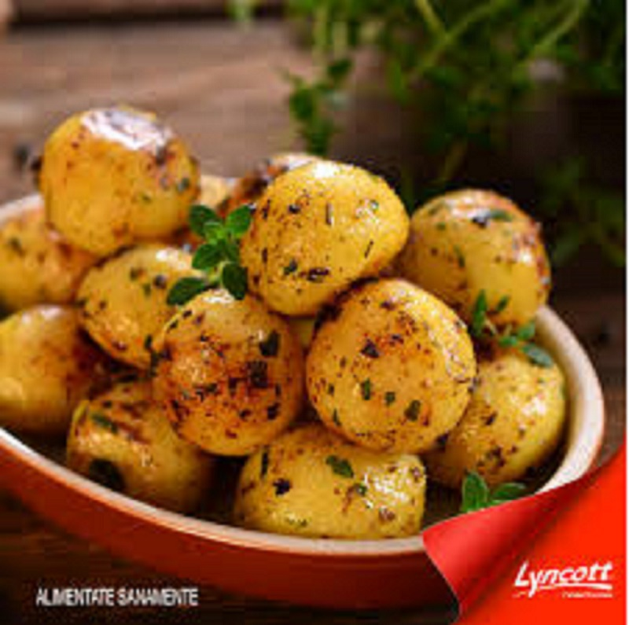

|  |
INGRREDIENTES PARA PAPAS CAMBRAY
- 1 taza de Pure de tomate natural
- 2 piezas de chile chipotle adobado
- 1 cubo de concentrado de tomate con pollo
- 1 cucharadita de sal con cebolla en polvo
- 1/2 Taza de agua
- 1 lata de media crema
- 2 cucharadas de aceite de maiz
- 1 cdebolla fileteada
- 4 tazas de papas cambray cocidas
- 5 Ramitas de cilantro fresco desinfectado y picado finamenete
PREPARACION:1.Licúa el puré de tomate con los chiles, el Concentrado de Tomate con Pollo CONSOMATE®, la sal con cebolla, el agua y la Media Crema
2.Calienta el aceite y fríe la cebolla hasta que cambie de color, añade las papas y cocina hasta que doren ligeramente.
3.Vierte lo que licuaste, cocina por 5 minutos o hasta que espese ligeramente y decora con el cilantro. Ofrece. !Y A DISFRUTAR!
|